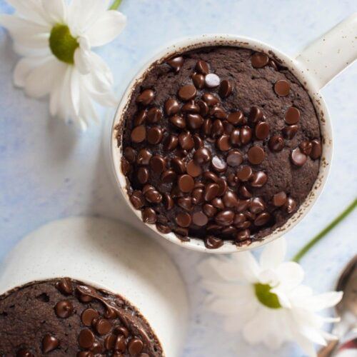

Microwave Mug Cake [Vegan]

Description:
A simple, quick, and vegan recipe for a chocolate mug cake.
This recipe is done using the microwave, and was not tested using other means
of cooking.
Ingredients:
- 2 tablespoons all-purpose flour
- 2 tablespoons cocoa powder
- 2 tablespoons granulated sugars
- 1/8 teaspoon salt
- 1 tablespoon neutral oil or vegan butter
- 3 tablespoons non-dairy milk
- 1/2 teaspoons vanilla extract
- OPTIONAL: 2 tablespoons dairy-free chocolate chips
Steps:
- Add in the dray ingredients: flour, cocoa powder, suagr, and salt. Mix well.
- Add in the liquid ingredients: oil, milk, vanilla extract. Mix well.
- Optinally top the batter with chocolate chips. You can add any toppings or fillings of your liking.
- Put it for approximately 1 minute in the microwave. It's recommended that you start with 50 seconds.
- Once a stick comes out clean, the cake is ready.
- Enjoy!